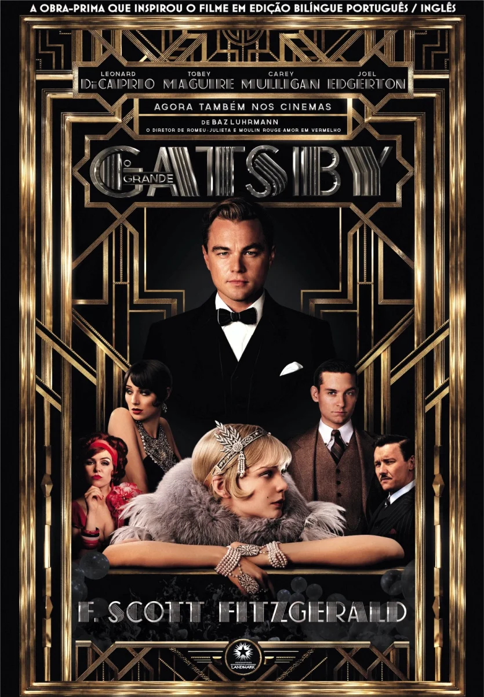

Introdução
"O Grande Gatsby" é um romance de F. Scott Fitzgerald, publicado em 1925, que retrata a vida da alta sociedade americana na década de 1920.
Sobre o Autor
F. Scott Fitzgerald foi um dos maiores autores americanos, conhecido por sua prosa elegante e suas histórias sobre a Era do Jazz.
Resumo da História
A história segue Jay Gatsby, um milionário misterioso, e seu amor por Daisy Buchanan, explorando temas como o Sonho Americano e a decadência moral.
Temas e Simbolismos
- O Sonho Americano: A busca pela riqueza e sucesso.
- Decadência Moral: Através de personagens envoltos em luxo, mas desprovidos de profundidade, o autor critica uma sociedade obcecada por aparências e desprovida de valores genuínos.
- Simbolismos: O farol verde,a esperança de Gatsby de reconquistar Daisy e também representa o sonho americano de buscar algo além do alcance
Adaptações Cinematográficas
"O Grande Gatsby" foi adaptado várias vezes para o cinema, destacando-se a versão de 2013, dirigida por Baz Luhrmann e estrelada por Leonardo DiCaprio.
Citações Memoráveis
"O destino trágico de Gatsby é um dos momentos mais impactantes do livro. Sua morte solitária e a ausência de verdadeiros amigos para lamentá-lo destacam a efemeridade das conquistas materiais e revelam a superficialidade das relações que ele construiu."